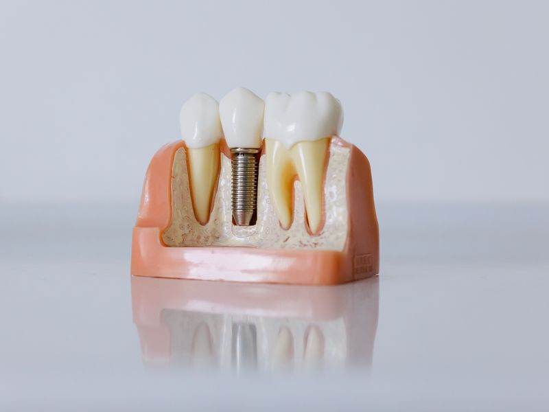

Reabilitação oral
Devolução de função mastigatória e estética em casos de perda dentária extensa, com planejamento integrado entre as especialidades.

Quando a reabilitação é indicada
Reabilitação oral é o tratamento de casos em que a perda de estrutura dentária compromete a mastigação, a fala ou a estética de forma ampla. Isso inclui ausências múltiplas, desgaste acentuado por bruxismo, fraturas extensas e situações em que restaurações anteriores já não cumprem sua função.
Diferente de um procedimento isolado, a reabilitação parte de uma visão do conjunto: como os dentes se relacionam entre si, como as forças de mastigação se distribuem e qual será o comportamento do sistema depois do tratamento.
Planejamento integrado
O diagnóstico reúne exame clínico, fotografias, modelos digitais, tomografia quando indicada e registro da relação entre as arcadas. A partir desses dados é possível projetar o resultado antes de intervir e definir a sequência entre as especialidades envolvidas — periodontia, endodontia, implantodontia e prótese.
Essa etapa também estabelece o que precisa ser tratado antes: doença periodontal ativa, focos de infecção e cáries são resolvidos antes da fase reabilitadora.
Etapas
-
Diagnóstico e projeto
Levantamento completo, planejamento digital e apresentação das opções de tratamento com suas etapas e prazos.
-
Fase preparatória
Tratamento de condições ativas e, quando necessário, enxertos, extrações e instalação de implantes.
-
Fase reabilitadora
Provisórios para validar função e estética, seguidos das próteses definitivas e do acompanhamento de manutenção.
Provisórios como etapa de validação
Em reabilitações amplas, as próteses provisórias não servem apenas para preencher o intervalo. Elas permitem testar altura, formato e função por um período antes da confecção definitiva, e ajustar o que for necessário enquanto a correção ainda é simples.
Perguntas frequentes
Quanto tempo leva?
Varia conforme a extensão do caso e a necessidade de procedimentos prévios, como enxertos ou tratamento periodontal. Casos amplos costumam se estender por vários meses, com etapas definidas desde o início.
Vou ficar sem dentes em algum momento?
Não. O planejamento prevê próteses provisórias que mantêm função e estética ao longo de todas as fases.
Prótese fixa ou removível sobre implantes?
A escolha depende da condição óssea, do número de implantes viáveis, da expectativa funcional e da rotina de higiene. As duas opções são apresentadas com suas implicações antes da decisão.
Avalie o seu caso
Cada indicação depende de exame clínico. Agende uma avaliação para saber o que se aplica a você.